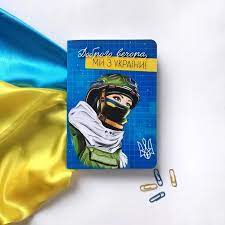
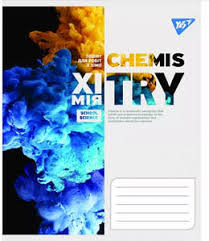
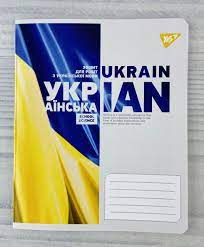

Новини
Шкільні зошити 2022



Шкільними зошитами користувалися всі. У них писали наші батьки, бабусі та дідусі, і навіть попри активний розвиток усіляких сучасних технологій школярі та студенти досі продовжують робити конспекти у звичних нам зошитах у лінії та клітинку.
Історія зошитів
З розвитком писемності людина всіляко намагалася зібрати й зберегти свої знання для наступних поколінь, спочатку історії запам'ятовували та передавали з вус у вуста, а потім почали записувати. Для цього використовували невеликі воскові дощечки, і дошки з чорним покриттям, на яких подряпували літери гострою паличкою, а також пергамент, папірус та інші матеріали, які зараз можна віднести до старовинних виробів паперового типу. Відкриття паперу приписують стародавньому Китаю, саме звідти до нас поширився цей матеріал для багатьох виробів. Разом з розвитком технологічного процесу з'явилася можливість виробництва паперових виробів у великих обсягах, для їхнього скріплення між собою використовували прошивку нитками, клей або невеликі металеві скоби. Разом з відкриттям дедалі більшої кількості навчальних закладів з'явилася й необхідність створення дешевих та зручних предметів, у яких учні могли записувати матеріал, що подається вчителем на уроках. Так з'явилися невеликі зошити на 12, 24 і більше листів зі звичайною зеленою обкладинкою та сіро-жовтими листками. Для уроків письма та літератури, як і зараз використовувалися зошити в лінію, а для арифметики – у клітинку. Звичні нам червоні поля з'явилися набагато пізніше – у 1936 році.
Наразі можна придбати шкільні зошити на будь-який смак. Існують навіть спеціальні зошити для першокласників, із щільними листами, а також із допоміжною лінією, для вироблення красивого почерку. На нашому сайті ви можете придбати новинки 2022 року – шкільні зошити з патріотичними дизайнами від найвідоміших українських виробників, таких як Тетрада, 1 Вересня та YES. Також у нас діє спеціальна цінова пропозиція для батьківських комітетів. Щоб переглянути весь асортимент, перейдіть за цим посиланням.
Повернутись на головну